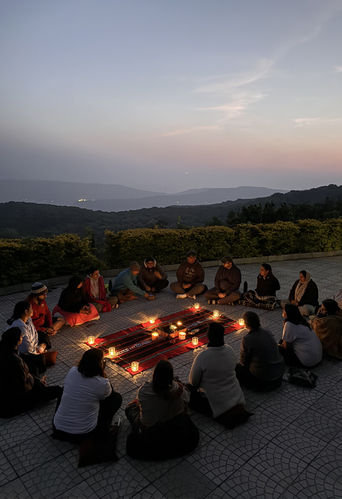
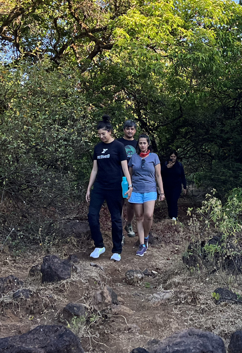
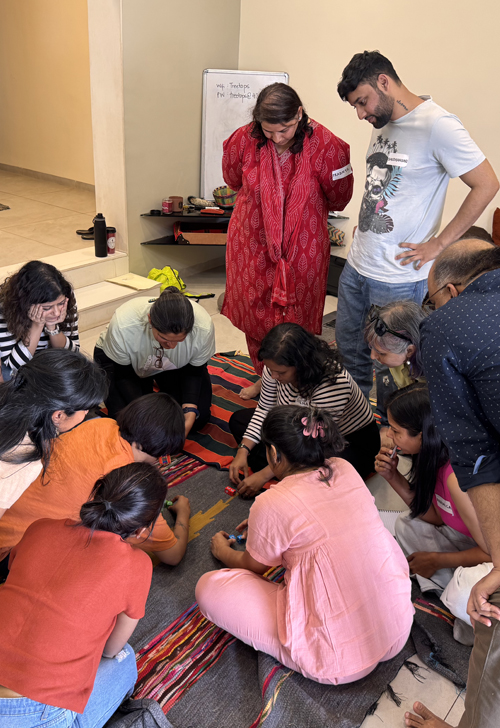
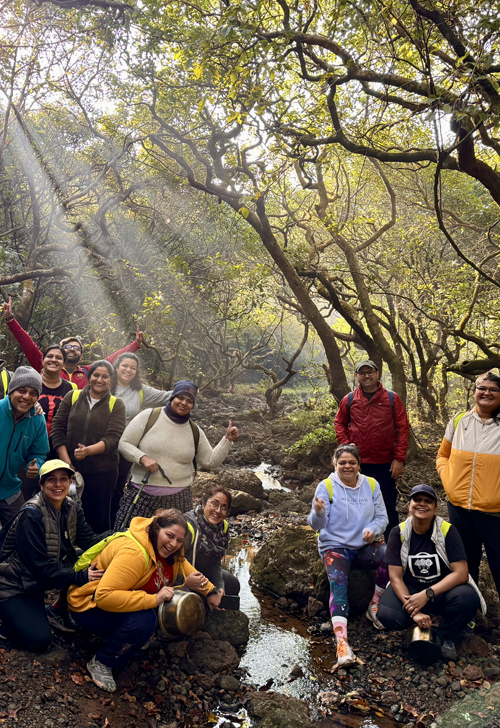

The Experiential Learning & Outdoor Education workshop is a 5-day immersive journey where learning comes alive through direct experience and connection with nature. It empowers educators, facilitators, and parents to design meaningful, engaging learning experiences rooted in curiosity and real-world application. Participants develop the ability to think intuitively, adapt dynamically, and create impactful learning environments both indoors and outdoors.




This 5-day residential workshop is to let curiosity lead the way, let nature awaken the senses and nourish our minds and spirit. This has been primarily designed for those who are in, or hope to take on the roles of - a facilitator, teacher, mentor, coach, guides or those who aim to undertake meaningful parenting. We will explore how to make learning easy for ourselves as well as our target audience; whether through physical workshops or online sessions.
Experiential Learning & Outdoor Education workshop highlights:
- We will kickstart by exploring the basic crux of learning as a concept.
- Understand the epistemology of experiential learning, its principles, and how experiential learning cycles unfold.
- Inquire into cultural & gender variations in learning.
- Gain insights into the basic differences between andragogy and pedagogy which dictate learning motivations & methods.
- The role of nature in making everyday learning fun, impactful and actionable.
- Understand the challenges and benefits of technology in learning methods.
- Recognise the role of music and movement in experiential learning processes.
- Explore how to rely on our intuitive bodily intelligence to make everyday decision-making effortless.
- Examine the concept of 'biomimicry' & how it can help make our respective workshops/sessions impactful.
- Work hands-on to design and execute activities & processes for any topic under the sun--from mathematics, leadership, environmental science, design thinking, to spirituality.
- How to think 'out of the box' and 'on your feet' for any situation in your role as a facilitator/ teacher.
- Review basic protocols & first aid techniques in using the outdoors as a classroom setting.